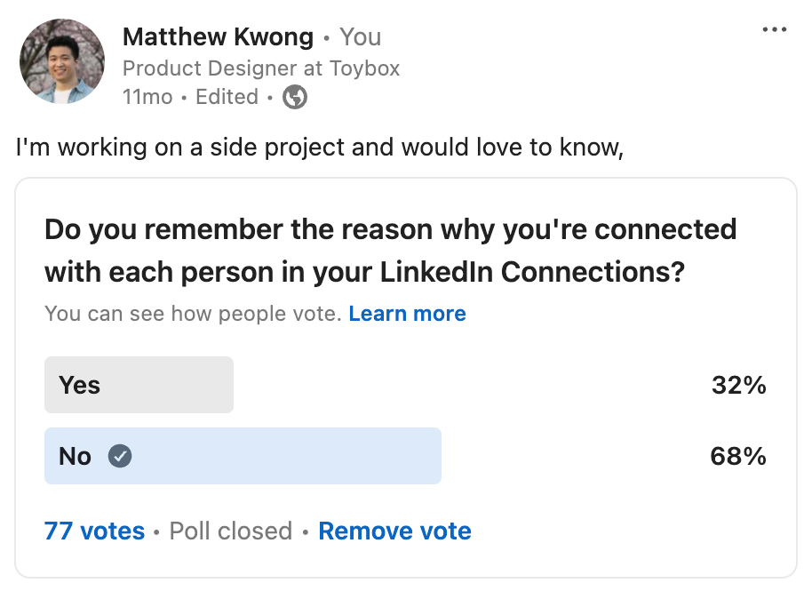

LinkedIn Circles
Creating a better way to manage your LinkedIn connections.
My Role:
Product Designer
Duration:
2 Weeks
Skills:
Product Design
Visual Design
Prototyping
Product Designer
2 Weeks
Product Design
Visual Design
Prototyping
As my LinkedIn network grew, I realized that I couldn't remember why I was connected with many of my connections.

To gauge if others shared this experience, I conducted a poll on LinkedIn and discovered that 68% of the 77 respondents faced the same challenge.
To solve this problem, I designed a Figma prototype for a feature called LinkedIn Circles.
This feature would enable users to privately group their connections, making it easy to remember how they know each person. To demonstrate this concept, the videos below show how Circles could be used in the context of a user's profile and on the My Network page.
To add a connection to a Circle, I utilized the existing "more" dropdown menu and added a new menu option labeled "Add to Circle" as this menu is the core component to modifying any LinkedIn connection.
Once a connection is added to a Circle, a tag is placed on their profile. Clicking the tag opens a pop-up modal that shows connections you've added to the Circle and the ability to edit.
This was created by following the existing LinkedIn modal and form field design patterns.
To add multiple connections to a Circle, I created an efficient multi-select feature from the My Connections page.
Utilizing the existing UI, I added a "manage" button across from the "Connections" title that puts the My Connections page into edit mode where users can click on the checkboxes to multi-select and add their connections to a Circle.
I truly believe that LinkedIn needs a better system for organizing connections to connect professionals effectively. I hope that incorporating a feature like this could be a significant step in that direction!
If you'd like to see this integrated into LinkedIn, like, comment and share this post on LinkedIn!